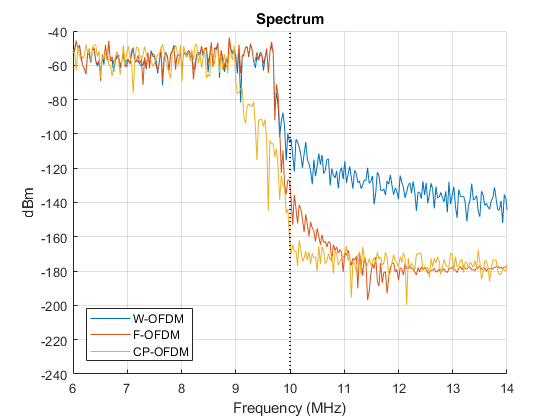

5G Waveform Spectral Analysis
This example analyzes the spectral characteristics of the following waveforms: W-OFDM, F-OFDM and CP-OFDM. These waveforms are analyzed in terms of the amount of power leaked into neighboring bands and their RMS EVM. Two cases are considered: a linear case and a case where PA (power amplifier) non-linearities are introduced.
Contents
New Radio Waveforms
5G will use OFDM with cyclic prefix as modulation scheme. In order to increase spectral efficiency, out of band emissions must be controlled. LTE already implements filtering and windowing to control spectral leakage. However, in LTE, a bandwidth occupancy limit of 90% is mandatory. For example, for a bandwidth of 20 MHz, an LTE signal is transmitted using 100 resource blocks (RBs), which occupy a total of 100*12*15e3 = 18 MHz (12 carriers per RB and 15 kHz carrier spacing). In 5G, the 90% bandwidth occupancy limitation does not apply, potentially enabling an increase in spectral efficiency.
In this example you can explore the effect of using different bandwidth occupancies for the new proposed waveforms (W-OFDM and F-OFDM) and the effect of chosen parameters in terms of:
- Waveform quality: EVM
- Amount of power leaked to neighboring bands
This example supports the following waveforms:
- W-OFDM
- F-OFDM
- CP-OFDM (this is an LTE waveform, which includes filtering to meet the LTE ACLR requirements)
% Waveform types waveforms = {'W-OFDM','F-OFDM','CP-OFDM'}; % Bandwidths for each of the waveforms in RBs. 5G is not limited to 90% % bandwidth occupancy. NDLRBs = [108 108 100];
Out of Band Emissions Without PA Clipping
With increased bandwidth occupancy, out of band emissions have to be controlled. In 5G, some filtering and windowing techniques have been proposed, such as W-OFDM and F-OFDM. The figure below shows the spectrum at the band edge of a 20 MHz LTE signal (CP-OFDM) using 100 RBs. It also shows the spectrum of W-OFDM and F-OFDM signals occupying 108 RBs. Note that the LTE signal (CP-OFDM) has been filtered to meet the LTE out of band ACLR requirements. Observe that the W-OFDM and F-OFDM waveforms use more bandwidth, potentially increasing the spectral efficiency.
clipping = false; % W-OFDM [~, WOFDMspectrum, WOFDMfreq, evmWOFDM] = generateLTE5GWaveform('W-OFDM', NDLRBs(1),clipping); % F-OFDM [~, FOFDMspectrum, ~, evmFOFDM] = generateLTE5GWaveform('F-OFDM', NDLRBs(2),clipping); % CP-OFDM [~, CPOFDMspectrum, ~, evmCPOFDM] = generateLTE5GWaveform('CP-OFDM', NDLRBs(3),clipping); % Bandwith in Hz from NDLRB bandwidth = hNRBToBandwidth(NDLRBs(strcmpi(waveforms,'CP-OFDM')))*1e6; hNRWaveformsPlotBWOccupancy(WOFDMfreq,[WOFDMspectrum FOFDMspectrum CPOFDMspectrum],waveforms,NDLRBs,bandwidth)
One of the challenges in 5G design is to produce the right amount of out of band emissions, i.e. what filter to use in F-OFDM and the level of windowing and symbol overlap in W-OFDM. The figure below shows the spectrum at the edge of the occupied band (100 RBs for CP-OFDM and 108 RBs for W-OFDM and F-OFDM). It also shows the spectrum of the signal leaking into the neighboring band. The legend displays the EVM RMS and the power leaked in the 5 MHz next to the band of interest, i.e. between 10 MHz and 15 MHz in a double sided spectrum for a 20 MHz channel.
hNRWaveformsPlotSpectrumEVMLeakage(WOFDMfreq,[WOFDMspectrum FOFDMspectrum CPOFDMspectrum],NDLRBs,waveforms,[evmWOFDM, evmFOFDM,evmCPOFDM],'Spectrum (no PA clipping)');
Out of Band Emissions with PA Clipping
The figure above may indicate that F-OFDM does a better job than W-OFDM in reducing the amount of out of band emissions. However, when considering the non-linearities of a power amplifier, we can see that the benefits of using F-OFDM against W-OFDM are reduced (see below). Moreover, the filtering operation in F-OFDM may result in higher computational complexity when compared to time domain windowing (W-OFDM).
clipping = true; % W-OFDM [~, WOFDMspectrum, WOFDMfreq, evmWOFDM] = generateLTE5GWaveform('W-OFDM', NDLRBs(1),clipping); % F-OFDM [~, FOFDMspectrum, ~, evmFOFDM] = generateLTE5GWaveform('F-OFDM', NDLRBs(2),clipping); % CP-OFDM [~, CPOFDMspectrum, ~, evmCPOFDM] = generateLTE5GWaveform('CP-OFDM', NDLRBs(3),clipping); hNRWaveformsPlotSpectrumEVMLeakage(WOFDMfreq,[WOFDMspectrum FOFDMspectrum CPOFDMspectrum],NDLRBs,waveforms,[evmWOFDM, evmFOFDM,evmCPOFDM],'Spectrum (with PA clipping)');
Filtering and windowing can result in degradation of the quality of the signal, this is measured via EVM, which is also shown in the figures above. The value displayed is EVM RMS.
The figures above were generated using a 513 tap filter for F-OFDM and windowing with an alpha factor of 0.11.
Change Bandwidth and Subcarrier Spacing
The code below shows how to change the subcarrier spacing and the number of allocated resource blocks. In this example, we have selected a total of 270 resource blocks with a subcarrier spacing of 120 kHz. This results in an occupied bandwidth of 388.8 MHz, i.e. 97.2% bandwidth occupancy for an overall available bandwidth of 400 MHz.
clipping = true; mu = 3; subcarrierSpacing = 2.^mu*15; % in kHz NDLRB = 270; [~, WOFDMspectrum, WOFDMfreq] = generate5GWaveform('W-OFDM',NDLRB,subcarrierSpacing, clipping); hNRWaveformsPlotDoubleSidedSpectrum(WOFDMfreq,WOFDMspectrum,NDLRB,subcarrierSpacing,'Spectrum (with PA clipping)');
Appendix
This example uses the following local functions:
- generateLTE5GWaveform: generates a W-OFDM or F-OFDM 5G waveform based on an LTE resource grid (LTE numerology, PDSCH and reference signals).
- generate5GWaveform: generates a W-OFDM or F-OFDM 5G waveform based on a resource grid of any size and with variable subcarrier spacing. The grid is filled with random data.
- cpofdmFilter: Applies filtering to a CP-OFDM waveform to meet the LTE ACLR requirements.
- applyNonLinearity: Apply PA non-linearity clipping to a waveform.
- estimateSpectrum: Estimate power spectrum of a waveform.
- measureLTEEVM: Measure the EVM of an LTE based waveform (requires reference signals).
- hNRWaveformsPlotBWOccupancy: Plots the bandwidth occupancy of the input waveform.
- hNRWaveformsPlotSpectrumEVMLeakage: Plots the spectrum of the waveform and displays the EVM and spectral leakage.
- hNRWaveformsPlotDoubleSidedSpectrum: Plots the double sided spectrum of a waveform with bandwidth annotations.
- hNRWaveformsPlotZoomedSpectrum: Plots the spectrum of a waveform zooms into the specified frequency range.
This example uses the following helper functions:
Local Functions
% Generate a 5G waveform based on an LTE resource grid. The resource grid % is filled with a full allocation PDSCH, cell specific reference symbols % and the control region. Supported waveforms are W-OFDM, F-OFDM and % CP-OFDM. The function returns the generated waveform, the power spectrum % and the corresponding frequency vector. The function also calculates the % EVM of the generated waveform. This is achieved by applying the % corresponding demodulation (CP-OFDM, W-OFDM or F-OFDM), estimating the % channel at the location of the reference symbols, applying ZF % equalization and measuring EVM on the resulting signal. function [waveform, P, f, evm] = generateLTE5GWaveform(waveformType, NDLRB, clipping) % Configuration structure rmc = struct(); rmc.NDLRB = NDLRB; rmc.PDSCH.PRBSet = (0:rmc.NDLRB-1).'; %rmc.PDSCH.TargetCodeRate = 0.5; gnb = lteRMCDL(rmc); gnb.WaveformType = waveformType; gnb.SubcarrierSpacing = 15; % kHz switch(gnb.WaveformType) case 'W-OFDM' gnb.Alpha = 0.11; case 'F-OFDM' gnb.FilterLength = 513; gnb.ToneOffset = 2.5; end % Generate resource grid data = [1; 0; 0; 1]; [~,txgrid] = lteRMCDLTool(gnb,data); % OFDM modulation (W-OFDM, F-OFDM, CP-OFDM) [waveform,txinfo] = h5gOFDMModulate(gnb,txgrid); % LTE case: filter CP-OFDM signal to meet eUTRA ACLR requirements if (strcmpi(gnb.WaveformType,'CP-OFDM')) waveform = cpofdmFilter(gnb,txinfo,waveform); end % Oversampling ratio OSR = 4; % Upsample waveform by OSR oversampled = resample(waveform,OSR,1); % Apply PA non-linear clipping if (clipping) oversampled = applyNonLinearity(oversampled); end % Estimate power spectrum [P,f] = estimateSpectrum(oversampled,txinfo.SamplingRate*OSR); % Downsample waveform by OSR to measure EVM rxwaveform = resample(oversampled,1,OSR); % EVM measurement evm = measureLTEEVM(gnb,rxwaveform,txgrid); end % Generate a 5G waveform using a resource grid of any size with variable % subcarrier spacing. Supported waveforms are W-OFDM, F-OFDM and CP-OFDM. % the function returns the generated waveform, the power spectrum and the % associated frequency vector. The resource grid is filled with random % 16QAM symbols. This function does not use any LTE specific physical % signals or channels. function [waveform, P, f] = generate5GWaveform(waveformType, NDLRB, subcarrierSpacing, clipping) gnb = struct(); gnb.NDLRB = NDLRB; gnb.SubcarrierSpacing = subcarrierSpacing; gnb.CellRefP = 1; gnb.CyclicPrefix = 'Normal'; gnb.TotSubframes = 1; gnb.WaveformType = waveformType; switch(gnb.WaveformType) case 'W-OFDM' gnb.Alpha = 0.11; case 'F-OFDM' gnb.FilterLength = 513; gnb.ToneOffset = 2.5; end % Empty grid ofdmInfo = h5gOFDMInfo(gnb); txgrid = zeros(ofdmInfo.NSubcarriers,ofdmInfo.SymbolsPerSubframe*gnb.TotSubframes,gnb.CellRefP); nSymbols = numel(txgrid); % Generate random bits assuming 16QAM nBits = 4*nSymbols; bits = randi([0,1],1,nBits); symbols = lteSymbolModulate(bits,'16QAM'); txgrid(:) = symbols; % OFDM modulation (W-OFDM, F-OFDM, CP-OFDM) [waveform,txinfo] = h5gOFDMModulate(gnb,txgrid); % LTE case: filter CP-OFDM signal to meet eUTRA ACLR requirements if (strcmpi(gnb.WaveformType,'CP-OFDM')) waveform = cpofdmFilter(gnb,txinfo,waveform); end % Oversampling ratio OSR = 4; % Upsample waveform by OSR oversampled = resample(waveform,OSR,1); % Apply PA non-linear clipping if (clipping) oversampled = applyNonLinearity(oversampled); end % Estimate power spectrum [P,f] = estimateSpectrum(oversampled,txinfo.SamplingRate*OSR); end % Apply filtering to CP-OFDM waveform. This is based on the filtering % required to meet the ACLR values in an LTE signal. function filtered = cpofdmFilter(gnb,txinfo,inWaveform) lpFilter = dsp.LowpassFilter; lpFilter.SampleRate = txinfo.SamplingRate; bandwidthConfig = gnb.NDLRB * 12 * gnb.SubcarrierSpacing * 1e3; lpFilter.PassbandFrequency = bandwidthConfig / 2; bandwidth = hNRBToBandwidth(gnb.NDLRB)*1e6; lpFilter.StopbandFrequency = bandwidth / 2; fir = getFilter(lpFilter); tau = floor(length(fir.Numerator)/2); filtered = lpFilter([inWaveform; zeros(tau,size(inWaveform,2))]); filtered = filtered(1+tau:end,:); end % Apply PA non-linear clipping function clipped = applyNonLinearity(waveform) nonLinearity = comm.MemorylessNonlinearity; nonLinearity.Method = 'Rapp model'; nonLinearity.LinearGain = -6; nonLinearity.Smoothness = 0.8; clipped = nonLinearity(waveform); end % Estimate power spectrum of the provided waveform. This function estimates % the spectrum of the input waveform. It returns the estimated power % spectrum and the associated frequency locations. function [P,f] = estimateSpectrum(waveform,samplingRate) % Estimate spectrum spectrumEstimator = dsp.SpectrumEstimator; spectrumEstimator.SampleRate = samplingRate; spectrumEstimator.FFTLengthSource = 'Property'; spectrumEstimator.FFTLength = 4096; spectrumEstimator.SpectralAverages = length(waveform)/spectrumEstimator.FFTLength; spectrumEstimator.Window = 'Flat Top'; spectrumEstimator.FrequencyRange = 'centered'; P = spectrumEstimator(waveform) * 1e3; % in dBm f = getFrequencyVector(spectrumEstimator); % in Hz end % Measure the EVM of the input waveform based on the values of the symbols % in txgrid. function evm = measureLTEEVM(gnb,rxwaveform,txgrid) rxgrid = h5gOFDMDemodulate(gnb,rxwaveform); pdschIndices = ltePDSCHIndices(gnb,gnb.PDSCH,gnb.PDSCH.PRBSet); refSymbols = txgrid(pdschIndices); hest = lteDLChannelEstimate(gnb,rxgrid); eqgrid = lteEqualizeZF(rxgrid,hest); pdschRxEq = lteExtractResources(pdschIndices,eqgrid*(10^(-gnb.PDSCH.Rho/20))); evm = lteEVM(pdschRxEq,refSymbols); end % Plot the spectrum P in the locations f. Display the legend specified in % input argument plotLegends and plot markers for the input bandwidth. % Multiple waveforms can be analyzed by passing f, P and waveformType as % cell arrays. function hNRWaveformsPlotBWOccupancy(f,P,plotLegends,NDLRBs,bandwidth) figure; grid on; hold on; title('Spectrum'); % Plot the spectrum P and zoom at the edge of the allocated band bandwidth = bandwidth*1e-6; % in MHz hNRWaveformsPlotZoomedSpectrum(f*1e-6,P,bandwidth/2*0.6,bandwidth/2*1.4) h = legend(plotLegends,'Location','southwest'); h.AutoUpdate = 'off'; % Plot a marker at the edge of the allocated band v = axis; for b = [NDLRBs*12*15e3/2 bandwidth/2] plot(repmat(b,1,2),v(3:4),'k:','LineWidth',1.4); end end % Plot the spectrum P in the locations f. Measure the out of band leaked % power between BW/2 and 1.5*(BW/2) and display it in the legend together % with the provided EVM value. The input argument waveformType contains a % character vector with the type of modulation used (CP-OFDM, W-OFDM or % F-OFDM). The bandwidth BW is calculated from the input parameter NDLRBs. % Multiple waveforms can be analyzed by passing f, P and waveformType as % cell arrays. function hNRWaveformsPlotSpectrumEVMLeakage(f,P,NDLRBs,waveformType,evm,figureTitle) figure; grid on; hold on; title(figureTitle); % Bandwith in MHz from NDLRB bandwidth = hNRBToBandwidth(NDLRBs(strcmpi(waveformType,'CP-OFDM'))); % Out of band leakage measuring interval outBand = [bandwidth/2 1.5*bandwidth/2]; % Find f index for out of band leakage measuring interval bwBandEdgeFreqIdx = find(f>=(outBand(1)),1,'first'); bwOutBandFreqIdx = find(f>=(outBand(2)),1,'first'); % Plot power spectrum hNRWaveformsPlotZoomedSpectrum(f*1e-6,P,outBand(1)*0.6,outBand(1)*1.6) % Measure power leakage in out of band measuring interval p = 10*log10(sum(P(bwBandEdgeFreqIdx:bwOutBandFreqIdx,:),1)); plotLegends = {}; for n=1:length(waveformType) legendLabel = waveformType{n}; powerLabel = ['P = ' num2str(p(n),'%0.1f') ' dBm']; evmLabel = ['EVM = ' num2str(evm(n).RMS*100,'%0.2f') '%']; % Power and EVM plot labels plotLegends = [plotLegends [legendLabel ', ' evmLabel ', ' powerLabel]]; %#ok<AGROW> end h = legend(plotLegends,'Location','southwest'); h.AutoUpdate = 'off'; % Out of band measuring interval markers v = axis; for b = outBand plot(repmat(b,1,2),v(3:4),'k:','LineWidth',2); end % Occupied bandwidth markers for b = NDLRBs*12*15e3/2 plot(repmat(b,1,2),v(3:4),'k:'); end ha = annotation('doublearrow'); ha.Parent = gca; ha.X = outBand; ha.Y = (v(3)+(v(4)-v(3))*0.8)*[1 1]; outBandLabel = num2str((outBand(2)-outBand(1)),'%0.1f'); arrowLabel = ['Neighboring ' outBandLabel ' MHz channel']; t = text(mean(outBand),(v(3)+(v(4)-v(3))*0.85),arrowLabel); t.HorizontalAlignment = 'Center'; end % Plot the double sided spectrum P in the locations f. The inputs NDLRB and % subcarrierSpacing are used for the figure annotations. function hNRWaveformsPlotDoubleSidedSpectrum(f,P,NDLRB,subcarrierSpacing,figureTitle) figure; grid on; hold on; title(figureTitle); % Plot power spectrum P and zoom on the edge of the allocated band bw = NDLRB*12*subcarrierSpacing*1e3*1e-6; hNRWaveformsPlotZoomedSpectrum(f*1e-6,P,bw/2*(-1.25),bw/2*1.25) legend([num2str(NDLRB) ' RBs. Subcarrier spacing: ' num2str(subcarrierSpacing) ' kHz.'],'Location','best'); % Plot an arrow specifying the used bandwidth v = axis; ha = annotation('doublearrow'); ha.Parent = gca; ha.X = [-1 1]*bw*0.5; ha.Y = (v(4)-(v(4)-v(3))*0.9)*[1 1]; bwLabel = ['BW: ' num2str(bw,'%0.1f')]; arrowLabel = [num2str(bwLabel) ' MHz']; t = text(0,(v(4)-(v(4)-v(3))*0.95),arrowLabel); t.HorizontalAlignment = 'Center'; end % Plot the spectrum P in the locations f and zoom into the [xmin xmax] % range. function hNRWaveformsPlotZoomedSpectrum(f,P,xmin,xmax) plot(f,10*log10(P)); v = axis; axis([xmin xmax v(3) v(4)]); xlabel('Frequency (MHz)') ylabel('dBm'); end